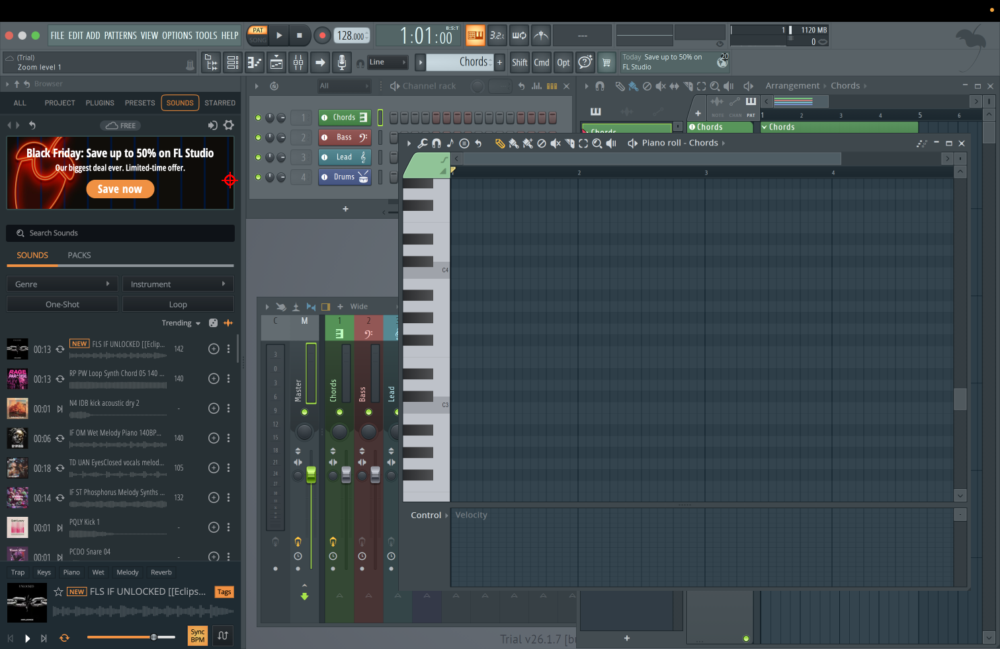

Find the channel button labeled Drums
Cyan: first prediction. Red: final prediction.

{
"instruction": "Find the channel button labeled Drums",
"image_width": 1512,
"image_height": 982,
"point": {
"x": 347.0,
"y": 272.0
},
"strategy": "baseline",
"model": "accounts/yuxinz721-ofi0hn0kj3/deployments/h0xbbw9t",
"calls": [
{
"point": {
"x": 347.0,
"y": 272.0
},
"raw_response": "```json\n{\"x\": 347, \"y\": 272}\n```",
"latency_seconds": 1.5232604999910109,
"usage": {
"completion_tokens": 144,
"prompt_tokens": 1569,
"total_tokens": 1713,
"completion_tokens_details": {
"accepted_prediction_tokens": null,
"audio_tokens": null,
"reasoning_tokens": 120,
"rejected_prediction_tokens": null
},
"prompt_tokens_details": {
"audio_tokens": null,
"cache_write_tokens": null,
"cached_tokens": 0
},
"output_tokens_details": {
"reasoning_tokens": 120
}
}
}
],
"latency_seconds": 1.5622216659830883
}